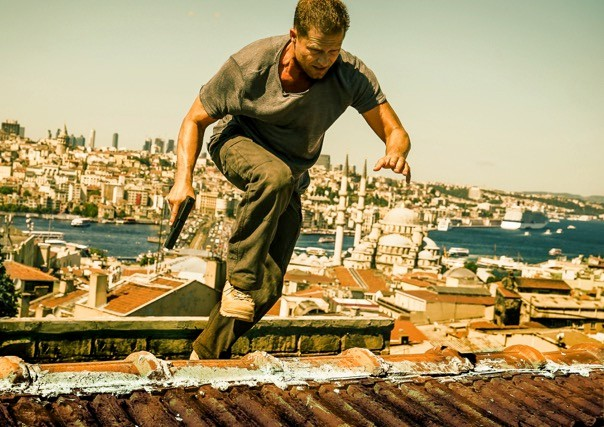

gesehen am 29.07.2016
gesehen am 29.07.2016Alternativ: Tschiller: Off Duty gesehen am 29.07.2016
 
 IMDB-Wertung: 3.8 / 10
IMDB-Wertung: 3.8 / 10  Metascore:
Metascore: 
The daughter of the German LKA agent Nick, wants to kill the murderer of her mum who has contacts to a Turkish crime organization! The plan doesn't succeed and Nick worries about the whereabouts of his daughter! The agent quickly locates her in Istanbul.
Jahr: 2016
Dauer: 140 Minuten
FSK:
Land: Deutschland Studio: Warner Bros.Tonspuren:
Untertitel:
Auflösung: 1080p (1920x800) Größe: 6031 MB
Genre: Action, Thriller, Komödie
Regisseur: Christian Alvart
Drehbuch: Todd Robinson
Soundtrack:
Darsteller:
 Til Schweiger als Niklas 'Nick' Tschiller
Til Schweiger als Niklas 'Nick' Tschiller Ralf Moeller als
Ralf Moeller als  Joe Toedtling als Lew
Joe Toedtling als Lew Steffen Jung als Police Officer
Steffen Jung als Police Officer Fahri Yardim als Yalcin Gümer
Fahri Yardim als Yalcin Gümer Stefanie Stappenbeck als Isabella Schoppenroth
Stefanie Stappenbeck als Isabella Schoppenroth Kida Khodr Ramadan als Demir
Kida Khodr Ramadan als Demir Erdal Yildiz als Firat Astan
Erdal Yildiz als Firat Astan Murathan Muslu als Idris Ervan
Murathan Muslu als Idris ErvanDatei: X:\5-Pentalogie(A-Z)\Tatort Tschiller\Tatort - Tschiller 5 - Off Duty (2016, FSK, 1920x800).mkv seit 29.07.2016
Festplatte: HD Collection-3(N-Z)-6(A-Z)
 Es gibt insgesamt 8 Filme in der Gruppe '5-Pentalogie(A-Z)\Tatort Tschiller'
Es gibt insgesamt 8 Filme in der Gruppe '5-Pentalogie(A-Z)\Tatort Tschiller'